The apps of the Shiny
gallery are written as R code (a user interface and a server
function). Here they are rebuilt from YAML configurations: the same
inputs, outputs, layout and server code, with the server code split into
the services of the outputs and a prescript for the reactive
expressions. Small differences of the html structure (for example rows
around columns, or a titlePanel instead of a
headerPanel) are noted for each app.
The second part shows two large showcase dashboards combining most features of rvis dashboards.
Shiny gallery apps
Faithful
Original: Faithful (source in shiny-examples).
Run it:
runDashboard(rvisDashboardExample("faithful"))
The original is a bootstrapPage and its check box labels
are bold: here a fluidPage with plain labels. The bandwidth
slider is in a conditionalPanel.
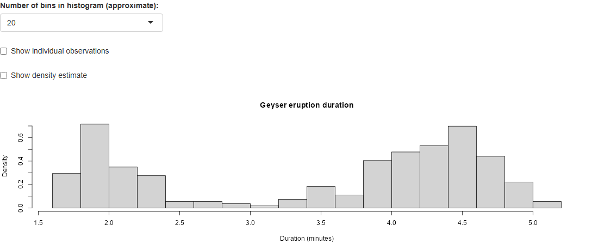
YAML configuration
# Shiny gallery: Faithful (shiny-examples 083-front-page)
# https://shiny.posit.co/r/gallery/start-simple/faithful/
name: Faithful
layout: page
items:
page:
type: fluidPage
layout: [n_breaks, individual_obs, density, main_plot, bandwidth]
n_breaks:
type: selectInput
title: "Number of bins in histogram (approximate):"
choices: [10, 20, 35, 50]
selected: 20
individual_obs:
type: checkboxInput
title: Show individual observations
value: false
density:
type: checkboxInput
title: Show density estimate
value: false
main_plot:
type: plotOutput
height: 300px
service: |
hist(faithful$eruptions,
probability = TRUE,
breaks = as.numeric(input$n_breaks),
xlab = "Duration (minutes)",
main = "Geyser eruption duration")
if (input$individual_obs) {
rug(faithful$eruptions)
}
if (input$density) {
dens <- density(faithful$eruptions, adjust = input$bw_adjust)
lines(dens, col = "blue")
}
# Display this only if the density is shown
bandwidth:
type: conditionalPanel
condition: input.density == true
layout: [bw_adjust]
bw_adjust:
type: sliderInput
title: "Bandwidth adjustment:"
min: 0.2
max: 2
value: 1
step: 0.2Kmeans example
Original: Kmeans example (source in shiny-examples).
Run it: runDashboard(rvisDashboardExample("kmeans"))
The reactive expressions selectedData() and
clusters() are defined in the prescript. The original uses
pageWithSidebar() with a headerPanel: here a
sidebarLayout with a titlePanel.
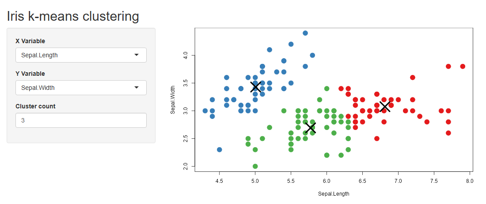
YAML configuration
# Shiny gallery: Kmeans example (shiny-examples 050-kmeans-example)
# https://shiny.posit.co/r/gallery/start-simple/kmeans-example/
name: Iris k-means clustering
layout: page
# Reactive expressions used by the services are defined in the prescript, which runs at the start of each session
prescript: |
# Combine the selected variables into a new data frame
selectedData <- reactive({
iris[, c(input$xcol, input$ycol)]
})
clusters <- reactive({
kmeans(selectedData(), input$clusters)
})
items:
page:
type: sidebarLayout
title: Iris k-means clustering
layout.side: [xcol, ycol, clusters]
layout.main: [plot1]
# k-means only works with numerical variables, so don't give the user the option to select a categorical variable
xcol:
type: selectInput
title: X Variable
choices: !expr setdiff(names(iris), "Species")
ycol:
type: selectInput
title: Y Variable
choices: !expr setdiff(names(iris), "Species")
selected: Sepal.Width
clusters:
type: numericInput
title: Cluster count
value: 3
min: 1
max: 9
plot1:
type: plotOutput
service: |
palette(c("#E41A1C", "#377EB8", "#4DAF4A", "#984EA3",
"#FF7F00", "#FFFF33", "#A65628", "#F781BF", "#999999"))
par(mar = c(5.1, 4.1, 0, 1))
plot(selectedData(),
col = clusters()$cluster,
pch = 20, cex = 3)
points(clusters()$centers, pch = 4, cex = 4, lwd = 4)Telephones by region
Original: Telephones by region (source in shiny-examples).
Run it:
runDashboard(rvisDashboardExample("telephones"))
The horizontal rule and the help text are static html items.
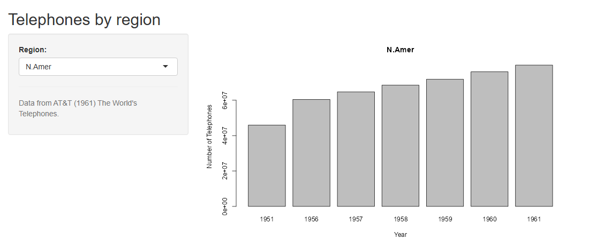
YAML configuration
# Shiny gallery: Telephones by region (shiny-examples 064-telephones-by-region)
# https://shiny.posit.co/r/gallery/start-simple/telephones-by-region/
name: Telephones by region
layout: page
items:
page:
type: sidebarLayout
title: Telephones by region
layout.side: [region, rule, help]
layout.main: [phonePlot]
region:
type: selectInput
title: "Region:"
choices: !expr colnames(WorldPhones)
rule:
type: static
html: <hr/>
help:
type: static
html: <span class="help-block">Data from AT&T (1961) The World's Telephones.</span>
phonePlot:
type: plotOutput
service: |
barplot(WorldPhones[, input$region] * 1000,
main = input$region,
ylab = "Number of Telephones",
xlab = "Year")Tabsets
Original: Tabsets (source in shiny-examples).
Run it:
runDashboard(rvisDashboardExample("tabsets"))
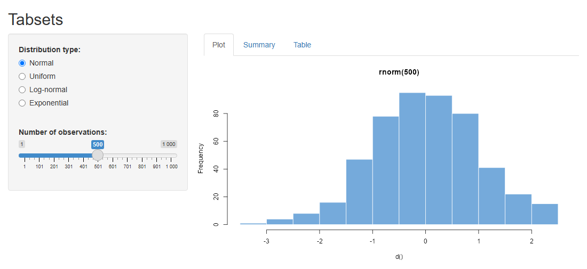
YAML configuration
# Shiny gallery: Tabsets (shiny-examples 006-tabsets)
# https://shiny.posit.co/r/gallery/application-layout/tabsets/
name: Tabsets
layout: page
prescript: |
# Reactive expression to generate the requested distribution
d <- reactive({
dist <- switch(input$dist,
norm = rnorm,
unif = runif,
lnorm = rlnorm,
exp = rexp,
rnorm)
dist(input$n)
})
items:
page:
type: sidebarLayout
title: Tabsets
layout.side: [dist, space, n]
layout.main: [tabs]
dist:
type: radioButtons
title: "Distribution type:"
choices:
Normal: norm
Uniform: unif
Log-normal: lnorm
Exponential: exp
space:
type: static
html: <br/>
n:
type: sliderInput
title: "Number of observations:"
value: 500
min: 1
max: 1000
tabs:
type: tabsetPanel
shape: tabs
layout: [plot_tab, summary_tab, table_tab]
plot_tab: {type: tabPanel, title: Plot, layout: [plot]}
summary_tab: {type: tabPanel, title: Summary, layout: [summary]}
table_tab: {type: tabPanel, title: Table, layout: [table]}
plot:
type: plotOutput
service: |
dist <- input$dist
n <- input$n
hist(d(),
main = paste("r", dist, "(", n, ")", sep = ""),
col = "#75AADB", border = "white")
summary:
type: verbatimTextOutput
service: summary(d())
table:
type: tableOutput
service: d()Navbar example
Original: Navbar example (source in shiny-examples).
Run it:
runDashboard(rvisDashboardExample("navbar-example"))
The text of the About tab is html in the configuration, instead of a
markdown file read by includeMarkdown().
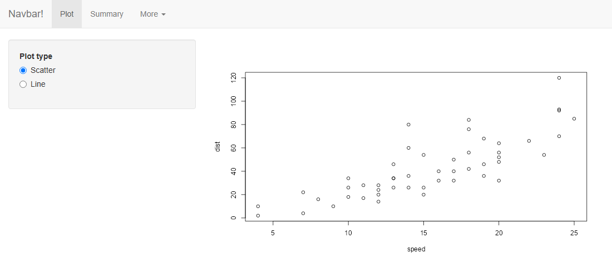
YAML configuration
# Shiny gallery: Navbar example (shiny-examples 052-navbar-example)
# https://shiny.posit.co/r/gallery/application-layout/navbar-example/
name: Navbar!
layout: nav
items:
nav:
type: navbarPage
title: Navbar!
layout: [plot_tab, summary_tab, more]
plot_tab:
type: tabPanel
title: Plot
layout: [plot_page]
plot_page:
type: sidebarLayout
layout.side: [plotType]
layout.main: [plot]
plotType:
type: radioButtons
title: Plot type
choices: {Scatter: p, Line: l}
plot:
type: plotOutput
service: plot(cars, type = input$plotType)
summary_tab:
type: tabPanel
title: Summary
layout: [summary]
summary:
type: verbatimTextOutput
service: summary(cars)
more:
type: navbarMenu
title: More
layout: [table_tab, about_tab]
table_tab:
type: tabPanel
title: Table
layout: [table]
table:
type: dataTableOutput
service: DT::datatable(cars)
about_tab:
type: tabPanel
title: About
# one row with two columns of widths 6 and 3
layout:
- - {weight: 6, items: about}
- {weight: 3, items: photo}
about:
type: static
html: |
<h3>Speed and Stopping Distances of Cars</h3>
<p>The data give the speed of cars and the distances taken to stop. Note that the data were recorded in the 1920s.</p>
<ul>
<li><strong>Speed</strong> - speed (mph)</li>
<li><strong>Dist</strong> - stopping distance (ft)</li>
</ul>
photo:
type: static
html: |
<img class="img-polaroid" src="http://upload.wikimedia.org/wikipedia/commons/9/92/1919_Ford_Model_T_Highboy_Coupe.jpg"/>
<small>Source: Photographed at the Bay State Antique Automobile Club's July 10, 2005 show at the Endicott Estate in Dedham, MA by
<a href="http://commons.wikimedia.org/wiki/User:Sfoskett">User:Sfoskett</a></small>Plot plus three columns
Original: Plot plus three columns (source in shiny-examples).
Run it:
runDashboard(rvisDashboardExample("diamonds"))
Needs package ggplot2. The inputs of each column are in a row inside the column.
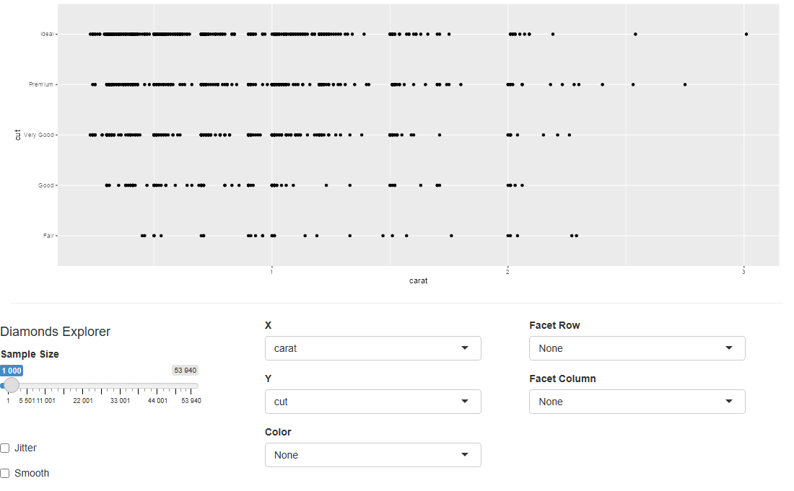
YAML configuration
# Shiny gallery: Plot plus three columns (shiny-examples 057-plot-plus-three-columns)
# https://shiny.posit.co/r/gallery/application-layout/plot-plus-three-columns/
# Needs package ggplot2.
name: Diamonds Explorer
layout: page
prescript: |
library(ggplot2)
dataset <- reactive({
diamonds[sample(nrow(diamonds), input$sampleSize), ]
})
items:
page:
type: fluidPage
wintitle: Diamonds Explorer
layout:
- [plot]
- [rule]
# a row of three columns
- - {weight: 3, items: [heading, sampleSize, space, jitter, smooth]}
- {weight: 4, offset: 1, items: [x, y, color]}
- {weight: 4, items: [facet_row, facet_col]}
plot:
type: plotOutput
service: |
p <- ggplot(dataset(), aes_string(x = input$x, y = input$y)) + geom_point()
if (input$color != 'None')
p <- p + aes_string(color = input$color)
facets <- paste(input$facet_row, '~', input$facet_col)
if (facets != '. ~ .')
p <- p + facet_grid(facets)
if (input$jitter)
p <- p + geom_jitter()
if (input$smooth)
p <- p + geom_smooth()
print(p)
rule: {type: static, html: <hr/>}
heading: {type: static, html: <h4>Diamonds Explorer</h4>}
space: {type: static, html: <br/>}
sampleSize:
type: sliderInput
title: Sample Size
min: 1
max: !expr nrow(ggplot2::diamonds)
value: 1000
step: 500
round: 0
jitter: {type: checkboxInput, title: Jitter}
smooth: {type: checkboxInput, title: Smooth}
x:
type: selectInput
title: X
choices: !expr names(ggplot2::diamonds)
y:
type: selectInput
title: Y
choices: !expr names(ggplot2::diamonds)
selected: cut
color:
type: selectInput
title: Color
choices: !expr c('None', names(ggplot2::diamonds))
facet_row:
type: selectInput
title: Facet Row
choices: !expr c(None = '.', names(ggplot2::diamonds)[sapply(ggplot2::diamonds, is.factor)])
facet_col:
type: selectInput
title: Facet Column
choices: !expr c(None = '.', names(ggplot2::diamonds)[sapply(ggplot2::diamonds, is.factor)])Widgets
Original: Widgets (source in shiny-examples).
Run it:
runDashboard(rvisDashboardExample("more-widgets"))
The event reactive datasetInput() (updated when the
button is clicked) is defined in the prescript.
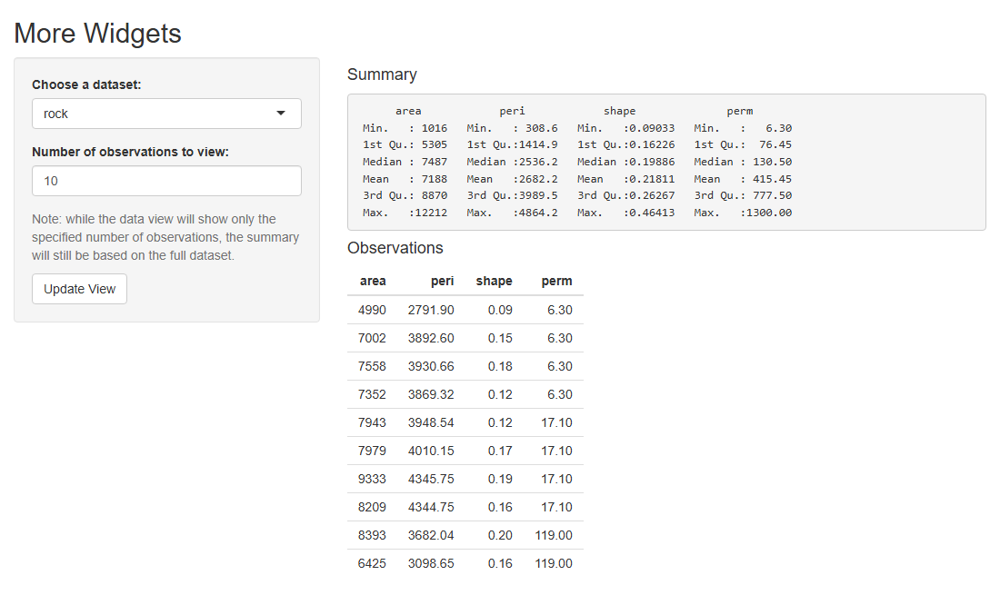
YAML configuration
# Shiny gallery: Widgets (shiny-examples 007-widgets)
# https://shiny.posit.co/r/gallery/widgets/widgets/
name: More Widgets
layout: page
prescript: |
# The dataset is only updated when the user clicks the action button
datasetInput <- eventReactive(input$update, {
switch(input$dataset,
"rock" = rock,
"pressure" = pressure,
"cars" = cars)
}, ignoreNULL = FALSE)
items:
page:
type: sidebarLayout
title: More Widgets
layout.side: [dataset, obs, help, update]
layout.main: [summary_title, summary, view_title, view]
dataset:
type: selectInput
title: "Choose a dataset:"
choices: [rock, pressure, cars]
obs:
type: numericInput
title: "Number of observations to view:"
value: 10
help:
type: static
html: >
<span class="help-block">Note: while the data view will show only the specified number of observations,
the summary will still be based on the full dataset.</span>
update:
type: actionButton
title: Update View
summary_title: {type: static, html: <h4>Summary</h4>}
view_title: {type: static, html: <h4>Observations</h4>}
summary:
type: verbatimTextOutput
service: |
dataset <- datasetInput()
summary(dataset)
# isolate() is used because the table should only update when the user clicks the action button
view:
type: tableOutput
service: head(datasetInput(), n = isolate(input$obs))Sliders
Original: Sliders (source in shiny-examples).
Run it:
runDashboard(rvisDashboardExample("sliders"))
The looping animation is given as an R expression:
animate: !expr shiny::animationOptions(interval = 300, loop = TRUE).
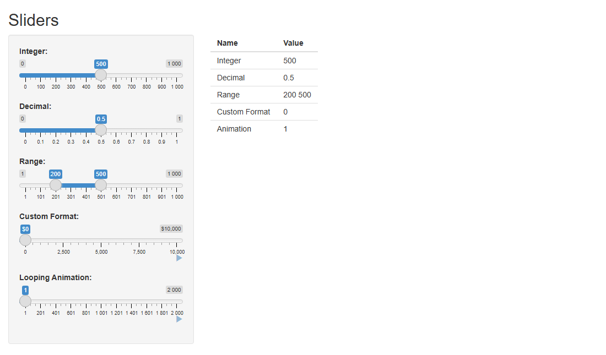
YAML configuration
# Shiny gallery: Sliders (shiny-examples 005-sliders)
# https://shiny.posit.co/r/gallery/widgets/sliders/
name: Sliders
layout: page
prescript: |
sliderValues <- reactive({
data.frame(
Name = c("Integer", "Decimal", "Range", "Custom Format", "Animation"),
Value = as.character(c(input$integer,
input$decimal,
paste(input$range, collapse = " "),
input$format,
input$animation)),
stringsAsFactors = FALSE)
})
items:
page:
type: sidebarLayout
title: Sliders
layout.side: [integer, decimal, range, format, animation]
layout.main: [values]
integer:
type: sliderInput
title: "Integer:"
min: 0
max: 1000
value: 500
decimal:
type: sliderInput
title: "Decimal:"
min: 0
max: 1
value: 0.5
step: 0.1
range:
type: sliderInput
title: "Range:"
min: 1
max: 1000
value: [200, 500]
format:
type: sliderInput
title: "Custom Format:"
min: 0
max: 10000
value: 0
step: 2500
pre: $
sep: ","
animate: true
animation:
type: sliderInput
title: "Looping Animation:"
min: 1
max: 2000
value: 1
step: 10
animate: !expr shiny::animationOptions(interval = 300, loop = TRUE)
values:
type: tableOutput
service: sliderValues()Date and date range
Original: Date and date range (source in shiny-examples).
Run it: runDashboard(rvisDashboardExample("dates"))
Dates relative to today are R expressions
(!expr Sys.Date() - 5). The verbatim outputs use
cat(): their render function is renderPrint()
(the original uses renderText()).
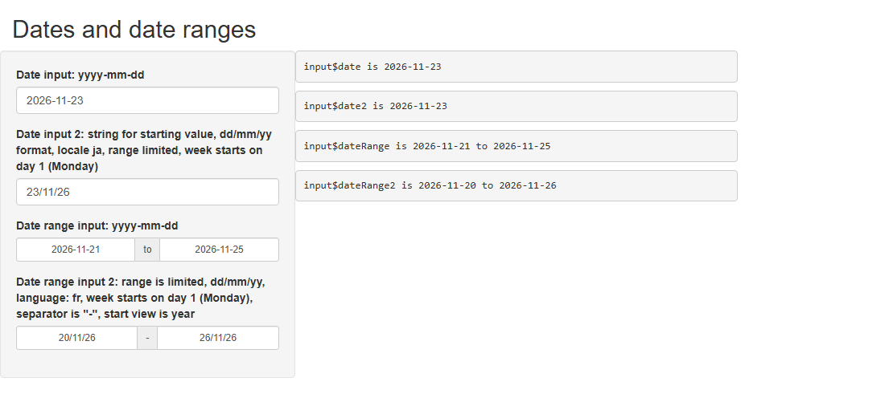
YAML configuration
# Shiny gallery: Date and date range (shiny-examples 037-date-and-date-range)
# https://shiny.posit.co/r/gallery/widgets/date-and-date-range/
name: Dates and date ranges
layout: page
items:
page:
type: fluidPage
title: Dates and date ranges
layout:
- - {weight: 4, items: inputs}
- {weight: 6, items: [dateText, dateText2, dateRangeText, dateRangeText2]}
inputs:
type: wellPanel
layout: [date, date2, dateRange, dateRange2]
date:
type: dateInput
title: "Date input: yyyy-mm-dd"
value: !expr Sys.Date()
date2:
type: dateInput
title: "Date input 2: string for starting value, dd/mm/yy format, locale ja, range limited, week starts on day 1 (Monday)"
value: !expr as.character(Sys.Date())
min: !expr Sys.Date() - 5
max: !expr Sys.Date() + 5
format: dd/mm/yy
startview: year
language: zh-TW
weekstart: 1
dateRange:
type: dateRangeInput
title: "Date range input: yyyy-mm-dd"
start: !expr Sys.Date() - 2
end: !expr Sys.Date() + 2
dateRange2:
type: dateRangeInput
title: 'Date range input 2: range is limited, dd/mm/yy, language: fr, week starts on day 1 (Monday), separator is "-", start view is year'
start: !expr Sys.Date() - 3
end: !expr Sys.Date() + 3
min: !expr Sys.Date() - 10
max: !expr Sys.Date() + 10
separator: " - "
format: dd/mm/yy
startview: year
language: fr
weekstart: 1
# verbatimTextOutput services are printed: cat() prints the text without quotes
dateText:
type: verbatimTextOutput
service: cat(paste("input$date is", as.character(input$date)))
dateText2:
type: verbatimTextOutput
service: cat(paste("input$date2 is", as.character(input$date2)))
dateRangeText:
type: verbatimTextOutput
service: cat(paste("input$dateRange is", paste(as.character(input$dateRange), collapse = " to ")))
dateRangeText2:
type: verbatimTextOutput
service: cat(paste("input$dateRange2 is", paste(as.character(input$dateRange2), collapse = " to ")))File download
Original: File download (source in shiny-examples).
Run it:
runDashboard(rvisDashboardExample("download"))
The filename of a download button is R code giving the
file name, its service writes the file.
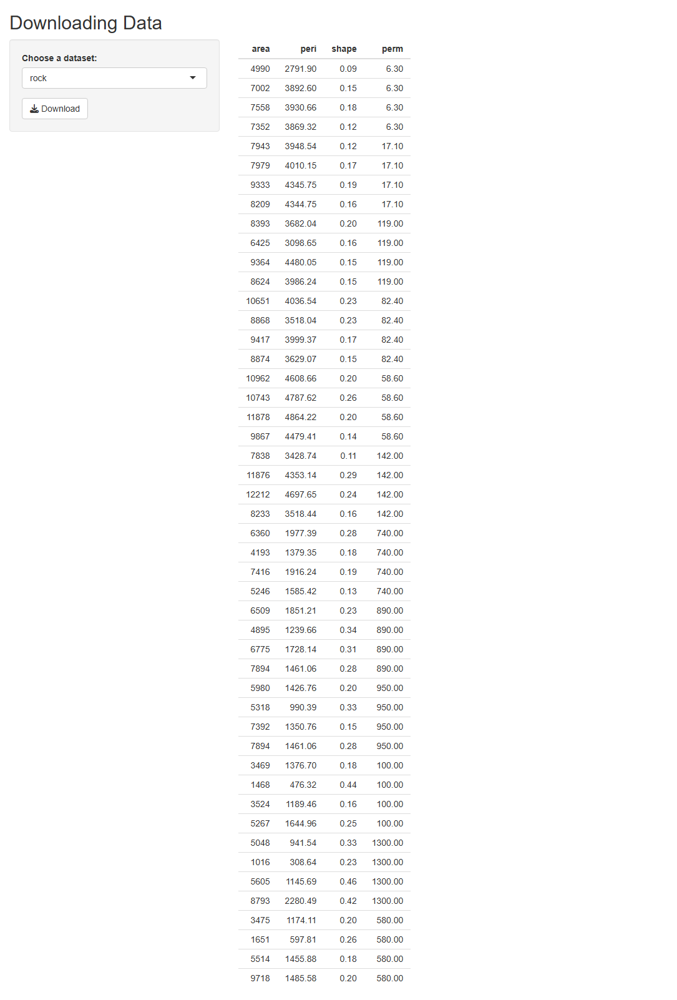
YAML configuration
# Shiny gallery: File Download (shiny-examples 010-download)
# https://shiny.posit.co/r/gallery/widgets/file-download/
name: Downloading Data
layout: page
prescript: |
datasetInput <- reactive({
switch(input$dataset,
"rock" = rock,
"pressure" = pressure,
"cars" = cars)
})
items:
page:
type: sidebarLayout
title: Downloading Data
layout.side: [dataset, downloadData]
layout.main: [table]
dataset:
type: selectInput
title: "Choose a dataset:"
choices: [rock, pressure, cars]
# filename: R code returning the file name; service: R code writing the content to 'file'
downloadData:
type: downloadButton
title: Download
filename: paste(input$dataset, ".csv", sep = "")
service: write.csv(datasetInput(), file, row.names = FALSE)
table:
type: tableOutput
service: datasetInput()Basic DataTable
Original: Basic DataTable (source in shiny-examples).
Run it:
runDashboard(rvisDashboardExample("basic-datatable"))
Needs packages ggplot2 (data set mpg) and DT.
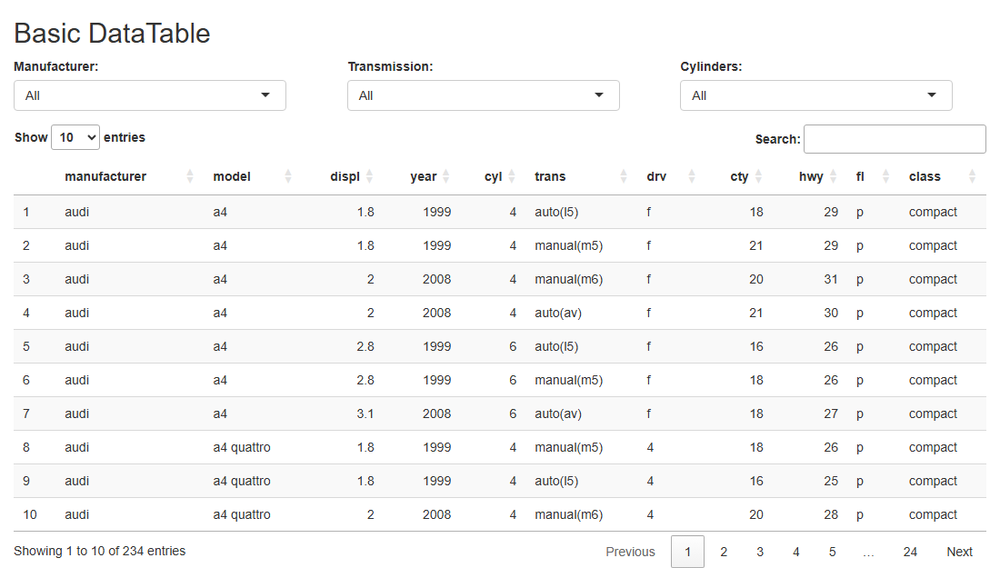
YAML configuration
# Shiny gallery: Basic DataTable (shiny-examples 030-basic-datatable)
# https://shiny.posit.co/r/gallery/widgets/basic-datatable/
# Needs packages ggplot2 (dataset mpg) and DT.
name: Basic DataTable
layout: page
items:
page:
type: fluidPage
title: Basic DataTable
layout:
# a row of three columns (each column gets 12/3 = 4 grid units), then the table
- - [man]
- [trans]
- [cyl]
- [table]
man:
type: selectInput
title: "Manufacturer:"
choices: !expr c("All", unique(as.character(ggplot2::mpg$manufacturer)))
trans:
type: selectInput
title: "Transmission:"
choices: !expr c("All", unique(as.character(ggplot2::mpg$trans)))
cyl:
type: selectInput
title: "Cylinders:"
choices: !expr c("All", unique(as.character(ggplot2::mpg$cyl)))
table:
type: dataTableOutput
service: |
DT::datatable({
data <- ggplot2::mpg
if (input$man != "All") {
data <- data[data$manufacturer == input$man,]
}
if (input$cyl != "All") {
data <- data[data$cyl == input$cyl,]
}
if (input$trans != "All") {
data <- data[data$trans == input$trans,]
}
data
})Reactivity
Original: Reactivity (source in shiny-examples).
Run it:
runDashboard(rvisDashboardExample("reactivity"))
The caption is a text output with tag: h3.
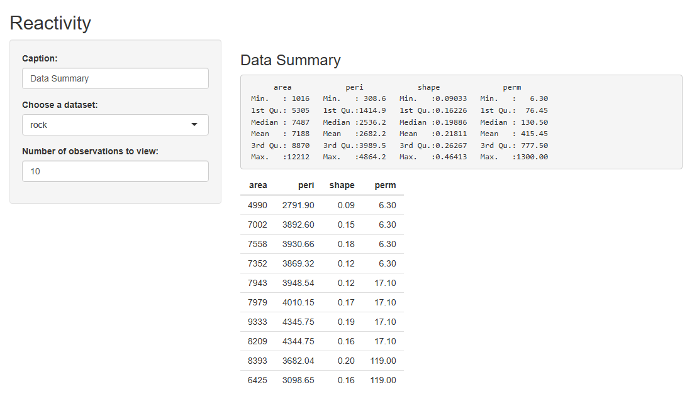
YAML configuration
# Shiny gallery: Reactivity (shiny-examples 003-reactivity)
# https://shiny.posit.co/r/gallery/reactive-programming/reactivity/
name: Reactivity
layout: page
prescript: |
datasetInput <- reactive({
switch(input$dataset,
"rock" = rock,
"pressure" = pressure,
"cars" = cars)
})
items:
page:
type: sidebarLayout
title: Reactivity
layout.side: [caption, dataset, obs]
layout.main: [caption_text, summary, view]
caption:
type: textInput
title: "Caption:"
value: Data Summary
dataset:
type: selectInput
title: "Choose a dataset:"
choices: [rock, pressure, cars]
obs:
type: numericInput
title: "Number of observations to view:"
value: 10
# a text output shown as a level 3 heading
caption_text:
type: textOutput
tag: h3
service: input$caption
summary:
type: verbatimTextOutput
service: |
dataset <- datasetInput()
summary(dataset)
view:
type: tableOutput
service: head(datasetInput(), n = input$obs)isolate demo
Original: isolate demo (source in shiny-examples).
Run it:
runDashboard(rvisDashboardExample("isolate"))
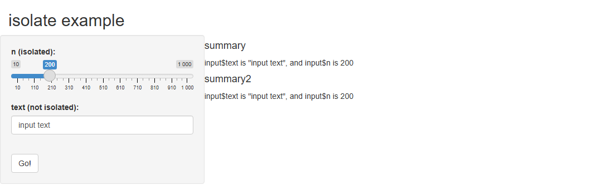
YAML configuration
# Shiny gallery: isolate demo (shiny-examples 049-isolate-demo)
# https://shiny.posit.co/r/gallery/reactive-programming/isolate-demo/
name: isolate example
layout: page
items:
page:
type: fluidPage
title: isolate example
layout:
- - {weight: 4, items: controls}
- {weight: 8, items: [summary_title, summary, summary2_title, summary2]}
controls:
type: wellPanel
layout: [n, text, space, goButton]
n:
type: sliderInput
title: "n (isolated):"
min: 10
max: 1000
value: 200
step: 10
text:
type: textInput
title: "text (not isolated):"
value: input text
space: {type: static, html: <br/>}
goButton:
type: actionButton
title: Go!
summary_title: {type: static, html: <h4>summary</h4>}
summary2_title: {type: static, html: <h4>summary2</h4>}
summary:
type: textOutput
service: |
input$goButton
paste0('input$text is "', input$text, '", and input$n is ', isolate(input$n))
summary2:
type: textOutput
service: |
input$goButton
str <- paste0('input$text is "', input$text, '"')
isolate({
str <- paste0(str, ', and input$n is ')
paste0(str, isolate(input$n))
})Timer
Original: Timer (source in shiny-examples).
Run it: runDashboard(rvisDashboardExample("timer"))
invalidateLater(1000, session) in the service updates
the text every second.
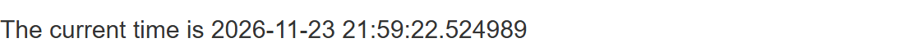
YAML configuration
# Shiny gallery: Timer (shiny-examples 011-timer)
# https://shiny.posit.co/r/gallery/reactive-programming/timer/
name: Timer
layout: page
items:
page:
type: fluidPage
layout: [currentTime]
currentTime:
type: textOutput
tag: h2
service: |
invalidateLater(1000, session)
paste("The current time is", Sys.time())Dynamic UI
Original: Dynamic UI (source in shiny-examples).
Run it:
runDashboard(rvisDashboardExample("dynamic-ui"))
The dynamic input is a dynamicInput item: its service
returns the input to show.
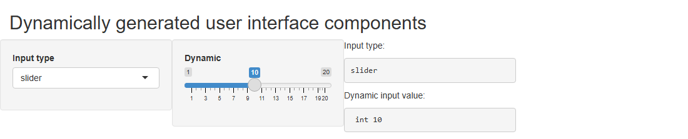
YAML configuration
# Shiny gallery: Dynamic UI (shiny-examples 041-dynamic-ui)
# https://shiny.posit.co/r/gallery/dynamic-user-interface/dynamic-ui/
name: Dynamically generated user interface components
layout: page
items:
page:
type: fluidPage
title: Dynamically generated user interface components
layout:
- - {weight: 3, items: type_panel}
- {weight: 3, items: ui_panel}
- {weight: 3, items: [type_label, input_type_text, value_label, dynamic_value]}
type_panel:
type: wellPanel
layout: [input_type]
ui_panel:
type: wellPanel
layout: [ui]
input_type:
type: selectInput
title: Input type
choices: [slider, text, numeric, checkbox, checkboxGroup, radioButtons, selectInput, selectInput (multi), date, daterange]
# a dynamicInput item is rendered by renderUI(): its service returns the input to show
ui:
type: dynamicInput
service: |
if (is.null(input$input_type))
return()
switch(input$input_type,
"slider" = sliderInput("dynamic", "Dynamic", min = 1, max = 20, value = 10),
"text" = textInput("dynamic", "Dynamic", value = "starting value"),
"numeric" = numericInput("dynamic", "Dynamic", value = 12),
"checkbox" = checkboxInput("dynamic", "Dynamic", value = TRUE),
"checkboxGroup" = checkboxGroupInput("dynamic", "Dynamic",
choices = c("Option 1" = "option1", "Option 2" = "option2"), selected = "option2"),
"radioButtons" = radioButtons("dynamic", "Dynamic",
choices = c("Option 1" = "option1", "Option 2" = "option2"), selected = "option2"),
"selectInput" = selectInput("dynamic", "Dynamic",
choices = c("Option 1" = "option1", "Option 2" = "option2"), selected = "option2"),
"selectInput (multi)" = selectInput("dynamic", "Dynamic",
choices = c("Option 1" = "option1", "Option 2" = "option2"),
selected = c("option1", "option2"), multiple = TRUE),
"date" = dateInput("dynamic", "Dynamic"),
"daterange" = dateRangeInput("dynamic", "Dynamic")
)
type_label: {type: static, html: "<p>Input type:</p>"}
value_label: {type: static, html: "<p>Dynamic input value:</p>"}
input_type_text:
type: verbatimTextOutput
service: cat(input$input_type)
dynamic_value:
type: verbatimTextOutput
service: str(input$dynamic)conditionalPanel demo
Original: conditionalPanel demo (source in shiny-examples).
Run it:
runDashboard(rvisDashboardExample("conditional-panel"))
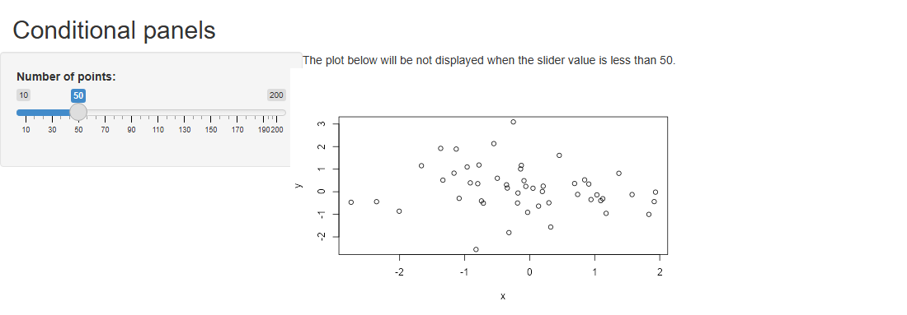
YAML configuration
# Shiny gallery: conditionalPanel demo (shiny-examples 033-conditionalpanel-demo)
# https://shiny.posit.co/r/gallery/dynamic-user-interface/conditionalpanel-demo/
name: Conditional panels
layout: page
items:
page:
type: fluidPage
title: Conditional panels
layout:
- - {weight: 4, items: controls}
- {weight: 5, items: [note, plot_panel]}
controls:
type: wellPanel
layout: [n]
n:
type: sliderInput
title: "Number of points:"
min: 10
max: 200
value: 50
step: 10
note:
type: static
html: The plot below will be not displayed when the slider value is less than 50.
# the condition is a javascript expression of the inputs
plot_panel:
type: conditionalPanel
condition: input.n >= 50
layout: [scatterPlot]
scatterPlot:
type: plotOutput
height: 300px
service: |
x <- rnorm(input$n)
y <- rnorm(input$n)
plot(x, y)Modal dialogs
Original: Modal dialogs (source in shiny-examples).
Run it:
runDashboard(rvisDashboardExample("modal-dialog"))
The service of the button shows the modal dialog.
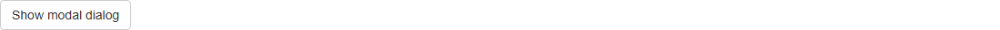
YAML configuration
# Shiny gallery: Modal dialogs (shiny-examples 114-modal-dialog)
# https://shiny.posit.co/r/gallery/advanced-shiny/modal-dialogs/
name: Modal dialog
layout: page
items:
page:
type: fluidPage
layout: [show]
# the service of an input runs when the input changes (here: when the button is clicked)
show:
type: actionButton
title: Show modal dialog
service: |
showModal(modalDialog(
title = "Important message",
"This is an important message!",
easyClose = TRUE
))Progress bar example
Original: Progress bar example (source in shiny-examples).
Run it:
runDashboard(rvisDashboardExample("progress"))
The function compute_data() is defined in the
prescript.
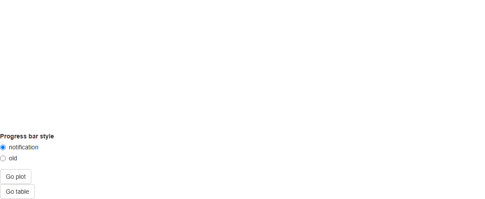
YAML configuration
# Shiny gallery: Progress bar example (shiny-examples 085-progress)
# https://shiny.posit.co/r/gallery/advanced-shiny/progress-bar-example/
name: Progress bar example
layout: page
# a function used by the table service, defined at the start of each session
prescript: |
compute_data <- function(updateProgress = NULL) {
dat <- data.frame(x = numeric(0), y = numeric(0))
for (i in 1:10) {
Sys.sleep(0.25)
new_row <- data.frame(x = rnorm(1), y = rnorm(1))
if (is.function(updateProgress)) {
text <- paste0("x:", round(new_row$x, 2), " y:", round(new_row$y, 2))
updateProgress(detail = text)
}
dat <- rbind(dat, new_row)
}
dat
}
items:
page:
type: fluidPage
layout: [plot, table, style, goPlot, goTable]
plot:
type: plotOutput
width: 300px
height: 300px
service: |
input$goPlot # Re-run when button is clicked
style <- isolate(input$style)
withProgress(message = 'Creating plot', style = style, value = 0.1, {
Sys.sleep(0.25)
dat <- data.frame(x = numeric(0), y = numeric(0))
withProgress(message = 'Generating data', style = style, detail = "part 0", value = 0, {
for (i in 1:10) {
dat <- rbind(dat, data.frame(x = rnorm(1), y = rnorm(1)))
incProgress(0.1, detail = paste("part", i))
Sys.sleep(0.1)
}
})
incProgress(0.5)
withProgress(message = 'And this also', detail = "This other thing", style = style, value = NULL, {
Sys.sleep(0.75)
})
setProgress(1)
})
plot(cars$speed, cars$dist)
table:
type: tableOutput
service: |
input$goTable
style <- isolate(input$style)
progress <- shiny::Progress$new(style = style)
progress$set(message = "Computing data", value = 0)
on.exit(progress$close())
updateProgress <- function(value = NULL, detail = NULL) {
if (is.null(value)) {
value <- progress$getValue()
value <- value + (progress$getMax() - value) / 5
}
progress$set(value = value, detail = detail)
}
compute_data(updateProgress)
style:
type: radioButtons
title: Progress bar style
choices: [notification, old]
goPlot: {type: actionButton, title: Go plot}
goTable: {type: actionButton, title: Go table}Plot interaction - basic
Original: Plot interaction - basic (source in shiny-examples).
Run it:
runDashboard(rvisDashboardExample("plot-interaction"))
Needs package ggplot2. The plot output gives the ids of the click,
double-click, hover and brush inputs; the css of the original page
header is a static style item.
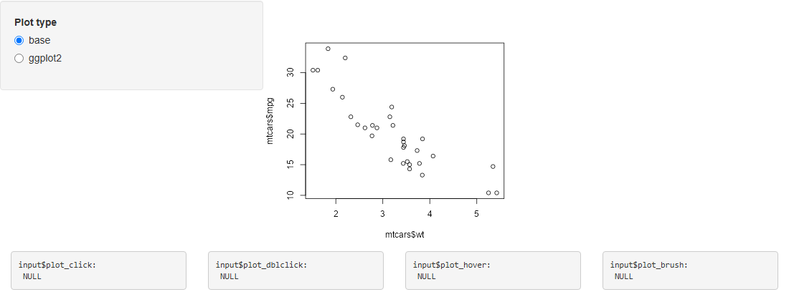
YAML configuration
# Shiny gallery: Plot interaction - basic (shiny-examples 093-plot-interaction-basic)
# https://shiny.posit.co/r/gallery/interactive-plots/plot-interaction-basic/
# Needs package ggplot2.
name: Plot interaction - basic
layout: page
prescript: library(ggplot2)
items:
page:
type: fluidPage
layout:
- [style]
# a row of two columns of width 4
- - {weight: 4, items: controls}
- {weight: 4, items: plot1}
# a row of four columns: each column gets 12/4 = 3 grid units
- - [click_info]
- [dblclick_info]
- [hover_info]
- [brush_info]
style:
type: static
html: |
<style>
pre, table.table {
font-size: smaller;
}
</style>
controls:
type: wellPanel
layout: [plot_type]
plot_type:
type: radioButtons
title: Plot type
choices: [base, ggplot2]
# click, dblclick, hover and brush give the ids of the inputs reporting mouse events on the plot
plot1:
type: plotOutput
height: 350px
click: plot_click
dblclick: plot_dblclick
hover: plot_hover
brush: plot_brush
service: |
if (input$plot_type == "base") {
plot(mtcars$wt, mtcars$mpg)
} else if (input$plot_type == "ggplot2") {
ggplot(mtcars, aes(wt, mpg)) + geom_point()
}
click_info:
type: verbatimTextOutput
service: |
cat("input$plot_click:\n")
str(input$plot_click)
dblclick_info:
type: verbatimTextOutput
service: |
cat("input$plot_dblclick:\n")
str(input$plot_dblclick)
hover_info:
type: verbatimTextOutput
service: |
cat("input$plot_hover:\n")
str(input$plot_hover)
brush_info:
type: verbatimTextOutput
service: |
cat("input$plot_brush:\n")
str(input$plot_brush)Shiny theme selector
Original: Shiny theme selector (source in shiny-examples).
Run it:
runDashboard(rvisDashboardExample("shinythemes"))
Needs package shinythemes. The page is made of two items: the theme
selector (!expr shinythemes::themeSelector()) and the
navbar page.
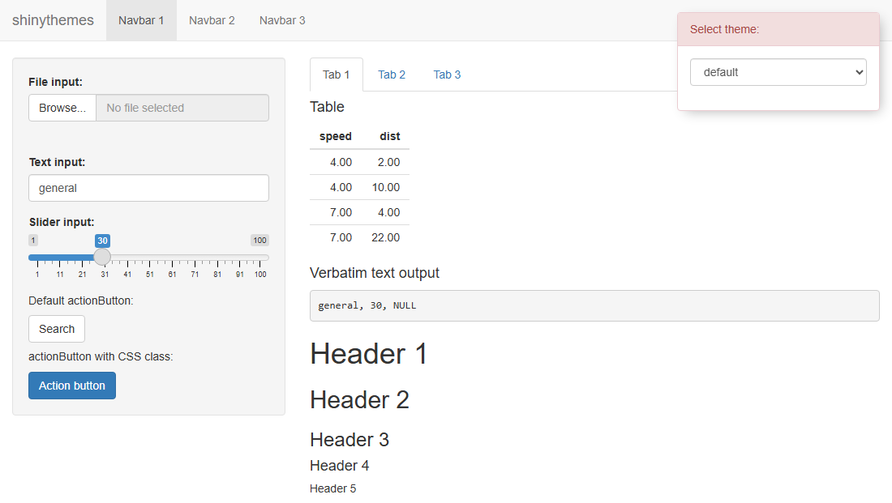
YAML configuration
# Shiny gallery: Shiny theme selector (shiny-examples 117-shinythemes)
# https://shiny.posit.co/r/gallery/application-layout/shiny-theme-selector/
# Needs package shinythemes.
name: shinythemes
# two items make the page: the theme selector and the navbar page
layout: [selector, nav]
items:
selector:
type: static
object: !expr shinythemes::themeSelector()
nav:
type: navbarPage
title: shinythemes
layout: [navbar1, navbar2, navbar3]
navbar1:
type: tabPanel
title: Navbar 1
layout: [navbar1_page]
navbar1_page:
type: sidebarLayout
layout.side: [file, txt, slider, default_label, action, primary_label, action2]
layout.main: [tabs]
file: {type: fileInput, title: "File input:"}
txt: {type: textInput, title: "Text input:", value: general}
slider: {type: sliderInput, title: "Slider input:", min: 1, max: 100, value: 30}
default_label: {type: static, html: "<h5>Default actionButton:</h5>"}
action: {type: actionButton, title: Search}
primary_label: {type: static, html: "<h5>actionButton with CSS class:</h5>"}
action2: {type: actionButton, title: Action button, class: btn-primary}
tabs:
type: tabsetPanel
layout: [tab1, tab2, tab3]
tab1:
type: tabPanel
title: Tab 1
layout: [table_title, table, txt_title, txtout, headers]
tab2: {type: tabPanel, title: Tab 2, layout: [blank]}
tab3: {type: tabPanel, title: Tab 3, layout: [blank]}
navbar2: {type: tabPanel, title: Navbar 2, layout: [blank]}
navbar3: {type: tabPanel, title: Navbar 3, layout: [blank]}
blank: {type: static, html: This panel is intentionally left blank}
table_title: {type: static, html: <h4>Table</h4>}
txt_title: {type: static, html: <h4>Verbatim text output</h4>}
headers:
type: static
html: <h1>Header 1</h1><h2>Header 2</h2><h3>Header 3</h3><h4>Header 4</h4><h5>Header 5</h5>
table:
type: tableOutput
service: head(cars, 4)
txtout:
type: verbatimTextOutput
service: cat(paste(input$txt, input$slider, format(input$date), sep = ", "))Showcase dashboards
US states explorer
Run it:
runDashboard(rvisDashboardExample("us-states"))
A multi-page shinydashboard about the 50 US states (R data sets
state.x77, state.region and
state.center): a sidebar menu with six pages and two
filters applying to all pages, value boxes, rvis charts made by
rvisPlot() (highcharter bar and pie charts, a plotly
scatter chart), a leaflet map, a table with download button, a help
window (bsModal), tooltips, a popover and a guided tour.
Needs packages shinydashboard, shinyBS, highcharter, plotly, leaflet, DT
and rintrojs.
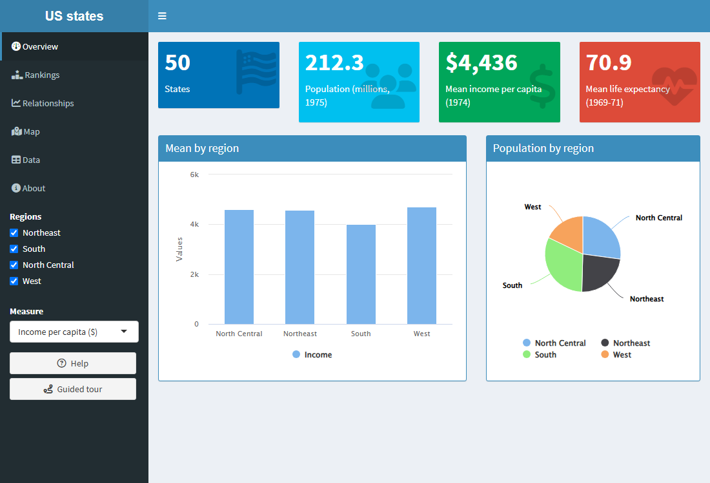
YAML configuration
# A multi-page shinydashboard about the 50 US states (data sets state.x77, state.region, state.center).
# It shows: sidebar menu and pages, filters in the sidebar, value boxes, rvis charts (highcharter, plotly),
# a leaflet map, tables with download, a modal help window, tooltips, popovers and a guided tour.
# Needs packages shinydashboard, shinyBS, highcharter, plotly, leaflet, DT and rintrojs.
name: US states explorer
layout: dash
# data prepared at the start of each session
prescript: |
states <- data.frame(
state = state.name, abb = state.abb, region = as.character(state.region),
lat = state.center$y, long = state.center$x, state.x77, check.names = FALSE, stringsAsFactors = FALSE)
names(states) <- c("state", "abb", "region", "lat", "long", "Population", "Income", "Illiteracy",
"Life.Exp", "Murder", "HS.Grad", "Frost", "Area")
measures <- c("Population (thousands)" = "Population", "Income per capita ($)" = "Income",
"Illiteracy (%)" = "Illiteracy", "Life expectancy (years)" = "Life.Exp",
"Murder rate (per 100,000)" = "Murder", "High-school graduates (%)" = "HS.Grad",
"Days with frost" = "Frost", "Area (square miles)" = "Area")
label <- function(m) names(measures)[measures == m]
selected <- reactive({
validate(need(length(input$regions) > 0, "Select at least one region."))
states[states$region %in% input$regions, ]
})
items:
dash:
type: dashboardPage
title: US states explorer
skin: blue
header.title: US states
header.title.font: trebuchet ms
header.title.font.weight: bold
layout.side: [menu, regions, measure, help, tour]
layout.body: [pages, help_modal]
# ---- sidebar ----
menu:
type: sidebarMenu
layout: [m_overview, m_rankings, m_relations, m_map, m_data, m_about]
m_overview: {type: menuItem, title: Overview, tabName: overview, icon: gauge}
m_rankings: {type: menuItem, title: Rankings, tabName: rankings, icon: ranking-star}
m_relations: {type: menuItem, title: Relationships, tabName: relations, icon: chart-line}
m_map: {type: menuItem, title: Map, tabName: map, icon: map-location-dot}
m_data: {type: menuItem, title: Data, tabName: data, icon: table}
m_about: {type: menuItem, title: About, tabName: about, icon: circle-info}
regions:
type: checkboxGroupInput
title: Regions
choices: !expr levels(state.region)
selected: !expr levels(state.region)
tooltip: The states of the selected regions are shown on all pages.
tooltip.placement: right
tutor.lesson: Choose the regions of the states shown on all pages.
tutor.step: 2
measure:
type: selectInput
title: Measure
choices: {Population (thousands): Population, Income per capita ($): Income, Illiteracy (%): Illiteracy, Life expectancy (years): Life.Exp, Murder rate (per 100000): Murder, High-school graduates (%): HS.Grad, Days with frost: Frost, Area (square miles): Area}
selected: Income
tutor.lesson: The measure shown by the charts, the map and the rankings.
tutor.step: 3
help:
type: actionButton
title: Help
icon: circle-question
width: 85%
tour:
type: actionButton
title: Guided tour
icon: route
width: 85%
service: rintrojs::introjs(session)
help_modal:
type: bsModal
title: How to use this dashboard
trigger: help
layout: [help_text]
help_text:
type: static
html: |
<p>Use the menu on the left to change pages. The <b>Regions</b> and <b>Measure</b> filters apply to all pages.</p>
<ul>
<li><b>Overview</b>: key figures and the measure by region.</li>
<li><b>Rankings</b>: states with the highest and lowest values.</li>
<li><b>Relationships</b>: compare two measures.</li>
<li><b>Map</b>: the measure at the centre of each state.</li>
<li><b>Data</b>: the table, which can be downloaded.</li>
</ul>
# ---- pages ----
pages:
type: tabItems
layout: [overview, rankings, relations, map, data, about]
overview:
type: tabItem
layout:
- [n_states, population, income, life]
- [by_region, share]
rankings:
type: tabItem
layout:
- [top_n]
- [top, bottom]
relations:
type: tabItem
layout:
- [x_measure, y_measure]
- [scatter, correlations]
map:
type: tabItem
layout: [leaflet_map]
data:
type: tabItem
layout: [table_box]
about:
type: tabItem
layout: [about_text]
# ---- overview ----
n_states:
type: valueBoxOutput
weight: 3
service: valueBox(nrow(selected()), "States", icon = icon("flag-usa"), color = "blue")
tutor.lesson: Key figures of the selected states.
tutor.step: 1
population:
type: valueBoxOutput
weight: 3
service: valueBox(format(round(sum(selected()$Population) / 1000, 1), nsmall = 1), "Population (millions, 1975)", icon = icon("users"), color = "aqua")
income:
type: valueBoxOutput
weight: 3
service: valueBox(paste0("$", format(round(mean(selected()$Income)), big.mark = ",")), "Mean income per capita (1974)", icon = icon("dollar-sign"), color = "green")
life:
type: valueBoxOutput
weight: 3
service: valueBox(round(mean(selected()$Life.Exp), 1), "Mean life expectancy (1969-71)", icon = icon("heart-pulse"), color = "red")
by_region:
type: highcharterOutput
height: 320px
service: |
d <- aggregate(selected()[input$measure], list(region = selected()$region), mean)
rvisPlot(type = "bar", plotter = "highcharter", obj = d, x = "region", y = input$measure)
cloth: {type: box, title: Mean by region, status: primary, solidHeader: true, weight: 7}
popover: Mean of the selected measure over the states of each region.
popover.title: By region
share:
type: highcharterOutput
height: 320px
service: |
d <- aggregate(Population ~ region, data = selected(), FUN = sum)
rvisPlot(type = "pie", plotter = "highcharter", obj = d, label = "region", theta = "Population")
cloth: {type: box, title: Population by region, status: primary, solidHeader: true, weight: 5}
# ---- rankings ----
top_n:
type: sliderInput
title: Number of states
min: 3
max: 15
value: 8
cloth: {type: box, weight: 4}
top:
type: highcharterOutput
height: 360px
service: |
d <- head(selected()[order(-selected()[[input$measure]]), c("state", input$measure)], input$top_n)
rvisPlot(type = "bar", plotter = "highcharter", obj = d, x = "state", y = input$measure)
cloth: {type: box, title: Highest, status: success, weight: 6}
bottom:
type: highcharterOutput
height: 360px
service: |
d <- head(selected()[order(selected()[[input$measure]]), c("state", input$measure)], input$top_n)
rvisPlot(type = "bar", plotter = "highcharter", obj = d, x = "state", y = input$measure)
cloth: {type: box, title: Lowest, status: danger, weight: 6}
# ---- relationships ----
x_measure:
type: selectInput
title: Horizontal axis
choices: [Population, Income, Illiteracy, Life.Exp, Murder, HS.Grad, Frost, Area]
selected: Illiteracy
cloth: {type: box, weight: 6}
y_measure:
type: selectInput
title: Vertical axis
choices: [Population, Income, Illiteracy, Life.Exp, Murder, HS.Grad, Frost, Area]
selected: Murder
cloth: {type: box, weight: 6}
scatter:
type: plotlyOutput
height: 400px
service: rvisPlot(type = "scatter", plotter = "plotly", obj = selected(), x = input$x_measure, y = input$y_measure, color = "region", label = "state")
cloth: {type: box, title: States, weight: 8}
correlations:
type: tableOutput
digits: 2
rownames: true
service: cor(selected()[, c("Population", "Income", "Illiteracy", "Life.Exp", "Murder", "HS.Grad", "Frost")])[, c(input$x_measure, input$y_measure), drop = FALSE]
cloth: {type: box, title: Correlations, weight: 4}
# ---- map ----
leaflet_map:
type: leafletOutput
height: 560px
service: |
d <- selected()
v <- d[[input$measure]]
pal <- leaflet::colorNumeric("viridis", v)
leaflet::leaflet(d) %>%
leaflet::addTiles() %>%
leaflet::addCircleMarkers(lng = ~long, lat = ~lat, radius = 6 + 14 * (v - min(v)) / diff(range(v)),
color = pal(v), fillOpacity = 0.8, stroke = FALSE,
label = paste0(d$state, ": ", format(v, big.mark = ","))) %>%
leaflet::addLegend(pal = pal, values = v, title = label(input$measure))
cloth: {type: box, title: Measure at the centre of each state, weight: 12}
# ---- data ----
# a bag (a simple container) with a box cloth
table_box:
type: bag
layout: [download, states_table]
cloth: {type: box, title: The selected states, weight: 12}
download:
type: downloadButton
title: Download CSV
filename: '"us-states.csv"'
service: write.csv(selected(), file, row.names = FALSE)
states_table:
type: dataTableOutput
options: {pageLength: 10, scrollX: true}
service: selected()
# ---- about ----
about_text:
type: static
html: |
<div class="box box-primary"><div class="box-body">
<h3>About the data</h3>
<p>Statistics of the 50 US states from the 1977 <i>Statistical Abstract of the United States</i> (R data sets
<code>state.x77</code>, <code>state.region</code> and <code>state.center</code>).</p>
<p>This dashboard is made of a single YAML file: <code>rvisDashboardExample("us-states")</code>.</p>
</div></div>Data explorer
Run it:
runDashboard(rvisDashboardExample("data-explorer"))
A navbar page with a theme: choose an R data set or upload a CSV
file, explore it with charts whose inputs depend on the columns of the
data and on the chart type (dynamic inputs, conditional panels), select
points by brushing, fit a linear model on demand (the button is enabled
only when predictors are selected, with an observer and
enableItems()/disableItems()) and download the
data. Needs packages shinythemes, shinyjs and DT.
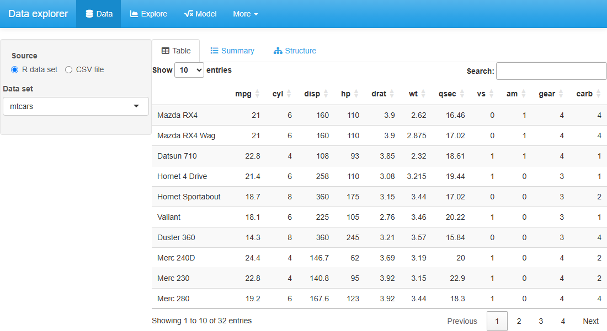
YAML configuration
# A data explorer on a navbar page: choose an R data set or upload a CSV file, explore it with charts built
# from dynamic inputs (with brushing), fit a linear model on demand and download the data.
# It shows: navbarPage with theme and menu, tabsets with tab panel clothes, conditional panels, dynamic inputs,
# reactive expressions and event reactives in the prescript, observers enabling/disabling items (shinyjs),
# plot brushing, file upload and download.
# Needs packages shinythemes, shinyjs and DT.
name: Data explorer
layout: nav
prescript: |
data <- reactive({
if (input$source == "upload") {
req(input$upload)
read.csv(input$upload$datapath, stringsAsFactors = TRUE)
} else {
as.data.frame(get(input$dataset, envir = asNamespace("datasets")))
}
})
numeric_vars <- reactive(names(Filter(is.numeric, data())))
factor_vars <- reactive(names(Filter(function(x) is.factor(x) || is.character(x), data())))
model <- eventReactive(input$fit, {
req(input$response, length(input$predictors) > 0)
lm(reformulate(input$predictors, input$response), data = data())
})
# the fit button is enabled only when predictors are selected
observers:
- if (length(input$predictors) > 0) enableItems("fit") else disableItems("fit")
items:
nav:
type: navbarPage
title: Data explorer
theme: !expr shinythemes::shinytheme("cerulean")
collapsible: true
layout: [data_tab, explore_tab, model_tab, more]
# ---- data ----
data_tab:
type: tabPanel
title: Data
icon: database
layout:
- - {weight: 3, items: source_panel}
- {weight: 9, items: data_tabs}
source_panel:
type: wellPanel
layout: [source, from_package, from_file]
source:
type: radioButtons
title: Source
choices: {R data set: package, CSV file: upload}
inline: true
from_package:
type: conditionalPanel
condition: input.source == 'package'
layout: [dataset]
dataset:
type: selectInput
title: Data set
choices: [mtcars, iris, airquality, ToothGrowth, CO2, ChickWeight, PlantGrowth, trees, swiss, faithful, women, stackloss]
from_file:
type: conditionalPanel
condition: input.source == 'upload'
layout: [upload]
upload:
type: fileInput
title: CSV file
accept: .csv
data_tabs:
type: tabsetPanel
layout: [preview, summary, structure]
preview:
type: dataTableOutput
options: {pageLength: 10, scrollX: true}
service: data()
cloth: {type: tabPanel, title: Table, icon: table}
summary:
type: verbatimTextOutput
service: summary(data())
cloth: {type: tabPanel, title: Summary, icon: list}
structure:
type: verbatimTextOutput
service: str(data())
cloth: {type: tabPanel, title: Structure, icon: sitemap}
# ---- explore ----
explore_tab:
type: tabPanel
title: Explore
icon: chart-area
layout:
- - {weight: 3, items: plot_controls}
- {weight: 9, items: [plot, brushed_title, brushed]}
plot_controls:
type: wellPanel
layout: [chart, axes, color_panel]
chart:
type: radioButtons
title: Chart
choices: {Scatter: scatter, Box plot: box, Histogram: histogram}
# inputs built from the columns of the data and the chart type
axes:
type: dynamicInput
service: |
switch(input$chart,
scatter = tagList(
selectInput("x", "Horizontal axis", numeric_vars()),
selectInput("y", "Vertical axis", numeric_vars(), selected = numeric_vars()[min(2, length(numeric_vars()))])),
box = tagList(
selectInput("x", "Groups", factor_vars()),
selectInput("y", "Values", numeric_vars())),
histogram = tagList(
selectInput("x", "Variable", numeric_vars()),
sliderInput("bins", "Bins", min = 5, max = 50, value = 20)))
color_panel:
type: conditionalPanel
condition: input.chart == 'scatter'
layout: [color_by]
color_by:
type: dynamicInput
service: selectInput("color", "Colour by", c("None", factor_vars()))
plot:
type: plotOutput
height: 420px
brush: plot_brush
service: |
d <- data()
req(input$x %in% names(d))
switch(input$chart,
scatter = {
req(input$y %in% names(d))
groups <- if (is.null(input$color) || input$color == "None") NULL else as.factor(d[[input$color]])
plot(d[[input$x]], d[[input$y]], xlab = input$x, ylab = input$y, pch = 19,
col = if (is.null(groups)) "#2FA4E7" else as.integer(groups) + 1)
if (!is.null(groups)) legend("topright", legend = levels(groups), col = seq_along(levels(groups)) + 1, pch = 19, bty = "n")
},
box = {
req(input$y %in% names(d))
boxplot(d[[input$y]] ~ d[[input$x]], xlab = input$x, ylab = input$y, col = "#BFE3F7")
},
histogram = hist(d[[input$x]], breaks = if (is.null(input$bins)) 20 else input$bins,
col = "#2FA4E7", border = "white", main = input$x, xlab = input$x))
brushed_title:
type: static
html: <h4>Brushed points <small>(drag on the scatter chart to select points)</small></h4>
brushed:
type: tableOutput
service: |
req(input$chart == "scatter", input$x, input$y)
head(brushedPoints(data(), input$plot_brush, xvar = input$x, yvar = input$y), 10)
# ---- model ----
model_tab:
type: tabPanel
title: Model
icon: square-root-variable
layout:
- - {weight: 3, items: model_controls}
- {weight: 9, items: [model_summary, model_plot]}
model_controls:
type: wellPanel
layout: [response, predictors, fit]
response:
type: dynamicInput
service: selectInput("response", "Response", numeric_vars())
predictors:
type: dynamicInput
service: checkboxGroupInput("predictors", "Predictors", setdiff(names(data()), input$response), selected = setdiff(numeric_vars(), input$response)[1])
fit:
type: actionButton
title: Fit model
icon: play
class: btn-primary
tooltip: Fits a linear model of the response on the predictors
tooltip.placement: right
model_summary:
type: verbatimTextOutput
service: summary(model())
model_plot:
type: plotOutput
height: 350px
service: |
par(mfrow = c(1, 2))
plot(model(), which = 1:2)
# ---- more ----
more:
type: navbarMenu
title: More
layout: [download_tab, about_tab]
download_tab:
type: tabPanel
title: Download
layout: [download_note, download_data]
download_note:
type: static
html: <p>Download the current data set as a CSV file.</p>
download_data:
type: downloadButton
title: Download data
filename: paste0(if (input$source == "upload") "uploaded" else input$dataset, ".csv")
service: write.csv(data(), file, row.names = FALSE)
about_tab:
type: tabPanel
title: About
layout: [about]
about:
type: static
html: |
<h3>About</h3>
<p>This app is made of a single YAML file read by <code>rvisDashboard()</code> of package rvis:
<code>rvisDashboardExample("data-explorer")</code>.</p>